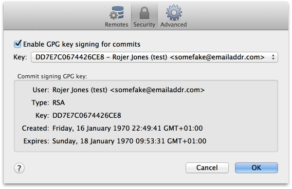

GPG: Signing Commits
SourceTree comes with the ability to sign your commits, verifying who the committer was. Many repositories need commits to be signed in order to be accepted merging feature branches through pull requests or just generally accepting commits to a repository.
To enable commit signing go into your "Repository Settings" (shortcut: ⇧⌘,) in the "Repository" menu and go to the tab "Security". Enabling commit signing is simple, just click on the checkbox "Enable GPG key signing for commits" which will then enable the rest of the GUI elements. From here you must then select a key to use through the drop-down.
Troubleshooting
My keys aren't listed
If your keys aren't listed it will be because either SourceTree can't find your GPG installation or GPG isn't listing any keys.
1. Incorrect SourceTree Preferences
Under the 'General' tab of your SourceTree preferences there's a 'GPG Program' input box at the very bottom. SourceTree attempts to automatically detect your gpg2 location but can get it wrong under rare circumstances. Generally the 'gpg' program in /usr/local/bin is a symlink to 'gpg2' if you've got a more recent version installed. To check this type 'ls -l /usr/local/bin/gpg' at the terminal. The output should look like the following: lrwxr-xr-x 1 root admin 27 29 Nov 2012 /usr/local/bin/gpg -> /usr/local/MacGPG2/bin/gpg2
If it doesn't look similar to this (i.e. if it doesn't have the arrow '->') then try calling 'which gpg2'. This will reveal the location of gpg2 which is what you want to use in your SourceTree preferences. Copy and paste this URL into the 'GPG Program' input box ensuring you don't specify 'gpg2' at the end. In many cases people use /usr/local/MacGPG2/bin or if gpg2 exists in /usr/local/bin then use /usr/local/bin.
2. No Secret Keys
To test you have secret keys, call gpg2 (based on information from the above point) as follows: gpg2 --list-secret-keys
There should be lines prefixed with 'sec' which stands for 'secret'. If there are no secret keys listed, then none will be shown in SourceTree. If there are lines with the 'sec' prefix then report this for further assistance on support.atlassian.com
I don't get prompted for a passphrase
This could be due to your gpg-agent starting with options that require a terminal-only input for your passphrase. If you haven't already, you can download and install GPGTools which includes the pinentry program which can then be set in ~/.gnupg/gpg-agent.conf. Once set you'll have to restart your gpg-agent daemon for changes to take effect.
The reason you need to set this is because a separate gpg-agent daemon would need to be started for the lifetime of the commit task. Generally you should only be running one gpg-agent instance, so to stop any signing problems unrelated to SourceTree it's best to rely on your existing daemon.